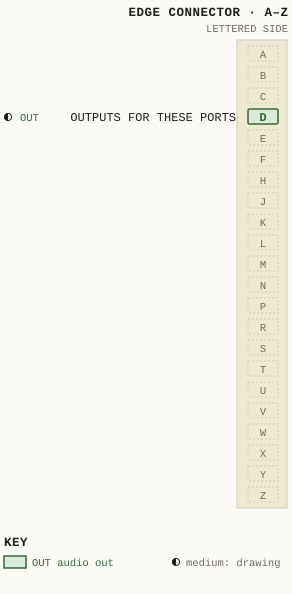
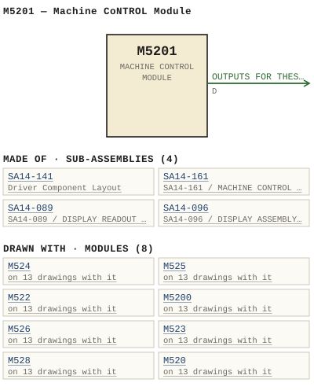

M5201 — Machine CoNTROL Module
| Type | module |
| Category | COMPUTERS |
| Try it | simulator & front panel · download package (zip) |
| Earliest dated evidence | 1986|19 — manual issue date |
| Evidence | "Issue #1 February 1986" in PUBLIC/Manuals + tech DOCUMENTS/Modules/M5201/WBS M5201 p42(1).JPG |
| Confidence | high |
| All years found | 1986|19, 1987|20 |
| Folder | Modules/COMPUTERS/M5200 |
| Folder | Modules/COMPUTERS/M5201 |
| Folder | Modules/COMPUTERS/M524 |
Connections
What it is made of and what it is part of.
Pictures
 1986 - M5201 - p30.jpg
1986 - M5201 - p30.jpg

M5201.pinout.svg

M5201.connections.svg 1986 - M5201 - p20.jpg
1986 - M5201 - p20.jpg 1986 - M5201 - p23.jpg
1986 - M5201 - p23.jpg 1986 - M5201 - p42.jpg
1986 - M5201 - p42.jpg 1987 - M5201 - p2.jpg
1987 - M5201 - p2.jpg 1987 - M5201 - p36.jpg
1987 - M5201 - p36.jpg 1987 - M5201 - p40.jpg
1987 - M5201 - p40.jpg 19xx - M5200 - AD - WBSPS - AD - LS series 003.jpg
19xx - M5200 - AD - WBSPS - AD - LS series 003.jpg 1986 - M5201 - 14-089-02-001.jpg
1986 - M5201 - 14-089-02-001.jpg 1986 - M5201 - 14-089-06-001 - READOUT ASSEMBLY COMPONENT LAYOUT.jpg
1986 - M5201 - 14-089-06-001 - READOUT ASSEMBLY COMPONENT LAYOUT.jpg 1986 - M5201 - 14-141-02-001.jpg
1986 - M5201 - 14-141-02-001.jpg 1986 - M5201 - 14-141-06-001 - DRIVER COMPONENT LAYOUT.jpg
1986 - M5201 - 14-141-06-001 - DRIVER COMPONENT LAYOUT.jpg 1986 - M5201 - 14-161-02-001 - MACHINE' CONTROL ASSEMBLY SCHEMATIC.jpg
1986 - M5201 - 14-161-02-001 - MACHINE' CONTROL ASSEMBLY SCHEMATIC.jpg 1986 - M5201 - 14-161-02-001 - UJO UJI FOO ROO.jpg
1986 - M5201 - 14-161-02-001 - UJO UJI FOO ROO.jpg 1986 - M5201 - 14-161-02-001 - UJSE RJID FUT USF.jpg
1986 - M5201 - 14-161-02-001 - UJSE RJID FUT USF.jpg 1986 - M5201 - 14-161-02-001.jpg
1986 - M5201 - 14-161-02-001.jpg 1986 - M5201 - 14-161-06-001 - MACHINE CONTROL ASSEMBLY COMPONENT LAYOUT.jpg
1986 - M5201 - 14-161-06-001 - MACHINE CONTROL ASSEMBLY COMPONENT LAYOUT.jpg 1986 - M5201 - 5201-02-001 - SMTCHER OISPLAY PORT OPNON.jpg
1986 - M5201 - 5201-02-001 - SMTCHER OISPLAY PORT OPNON.jpg 1986 - M5201 - 5201-04-001 - MACHINE CONTROL MODULE MODULE LAYOUT.jpg
1986 - M5201 - 5201-04-001 - MACHINE CONTROL MODULE MODULE LAYOUT.jpg 1986 - M5201 - 91-039-02-001 - ASSEMBLY SCHEMATIC.jpg
1986 - M5201 - 91-039-02-001 - ASSEMBLY SCHEMATIC.jpg 1986 - M5201 - p1.jpg
1986 - M5201 - p1.jpg 1986 - M5201 - p10.jpg
1986 - M5201 - p10.jpg 1986 - M5201 - p11.jpg
1986 - M5201 - p11.jpg 1986 - M5201 - p12.jpg
1986 - M5201 - p12.jpg 1986 - M5201 - p13.jpg
1986 - M5201 - p13.jpg 1986 - M5201 - p14.jpg
1986 - M5201 - p14.jpg 1986 - M5201 - p15.jpg
1986 - M5201 - p15.jpg 1986 - M5201 - p16.jpg
1986 - M5201 - p16.jpg 1986 - M5201 - p17.jpg
1986 - M5201 - p17.jpg 1986 - M5201 - p18.jpg
1986 - M5201 - p18.jpg 1986 - M5201 - p19.jpg
1986 - M5201 - p19.jpg 1986 - M5201 - p21.jpg
1986 - M5201 - p21.jpg 1986 - M5201 - p22.jpg
1986 - M5201 - p22.jpg 1986 - M5201 - p24.jpg
1986 - M5201 - p24.jpg 1986 - M5201 - p25.jpg
1986 - M5201 - p25.jpg 1986 - M5201 - p26.jpg
1986 - M5201 - p26.jpg 1986 - M5201 - p27.jpg
1986 - M5201 - p27.jpg 1986 - M5201 - p28.jpg
1986 - M5201 - p28.jpg 1986 - M5201 - p29.jpg
1986 - M5201 - p29.jpg 1986 - M5201 - p3.jpg
1986 - M5201 - p3.jpg 1986 - M5201 - p31.jpg
1986 - M5201 - p31.jpg 1986 - M5201 - p32.jpg
1986 - M5201 - p32.jpg 1986 - M5201 - p33.jpg
1986 - M5201 - p33.jpg 1986 - M5201 - p34.jpg
1986 - M5201 - p34.jpg 1986 - M5201 - p35.jpg
1986 - M5201 - p35.jpg 1986 - M5201 - p37.jpg
1986 - M5201 - p37.jpg 1986 - M5201 - p38.jpg
1986 - M5201 - p38.jpg 1986 - M5201 - p39.jpg
1986 - M5201 - p39.jpg 1986 - M5201 - p4.jpg
1986 - M5201 - p4.jpg 1986 - M5201 - p41.jpg
1986 - M5201 - p41.jpg 1986 - M5201 - p43.jpg
1986 - M5201 - p43.jpg 1986 - M5201 - p44.jpg
1986 - M5201 - p44.jpg 1986 - M5201 - p45.jpg
1986 - M5201 - p45.jpg 1986 - M5201 - p46.jpg
1986 - M5201 - p46.jpg 1986 - M5201 - p47.jpg
1986 - M5201 - p47.jpg 1986 - M5201 - p48.jpg
1986 - M5201 - p48.jpg 1986 - M5201 - p5.jpg
1986 - M5201 - p5.jpg 1986 - M5201 - p6.jpg
1986 - M5201 - p6.jpg 1986 - M5201 - p7.jpg
1986 - M5201 - p7.jpg 1986 - M5201 - p8.jpg
1986 - M5201 - p8.jpg 1986 - M5201 - p9.jpg
1986 - M5201 - p9.jpg 19xx - 5201-02-001 - MACHINE CONTROL MODULE SCHEMATIC - ISS 1.jpg
19xx - 5201-02-001 - MACHINE CONTROL MODULE SCHEMATIC - ISS 1.jpg 19xx - 5201-04-001 - MACHINE CONTROL MODULE MODULE LAYOUT - ISS 1.jpg
19xx - 5201-04-001 - MACHINE CONTROL MODULE MODULE LAYOUT - ISS 1.jpg 19xx - M5201 - Connector Layout M5201 Machine Control Module J4.jpg
19xx - M5201 - Connector Layout M5201 Machine Control Module J4.jpg 19xx - M5201 - Connector Layout M5201 Machine Control Module J6.jpg
19xx - M5201 - Connector Layout M5201 Machine Control Module J6.jpg 19xx - M5201 - Connector Layout M5201 Machine Control Module P8.jpg
19xx - M5201 - Connector Layout M5201 Machine Control Module P8.jpg 19xx - M5201 - Typical M5201 System Interconnect for ST Series Consoles.jpg
19xx - M5201 - Typical M5201 System Interconnect for ST Series Consoles.jpg 1985 - M5200 - CONNECTOR LAYOUT M5200 CONTROLLER MODULE.jpg
1985 - M5200 - CONNECTOR LAYOUT M5200 CONTROLLER MODULE.jpg 1985 - M5200 - p7.jpg
1985 - M5200 - p7.jpg 1985 - M5200 - p8.jpg
1985 - M5200 - p8.jpgPinout & connections
Each contact as its own documents name it: 1 named (1 medium confidence). An empty slot is a contact no page names. Hover a contact for its source; the table under the drawing lists them. A 37-pin connector, named in 1986 - M5201 - p30.jpg, p. 1.
pinout (SVG) · connections (SVG) · pins (JSON)
Pin evidence — 1 contacts
| Pin | Signal | Kind | Confidence | Read from | Source |
|---|---|---|---|---|---|
| D | OUTPUTS FOR THESE PORTS also: OUTPUTS FOR THESE POR… (prose); OUTPUTS FOR THESE POR… (prose); OUTPUTS FOR THESE POR… (prose) | audio out | medium | prose | 1986 - M5201 - p8.jpg, p. 1 “The outputs for these ports are isolated with dry contact relay closures Input and Output data ports are on 37 pin D ' fema connectors The …” |
Dates found in the documents
| Year | Kind | Text | File |
|---|---|---|---|
| 1986|19 | manual issue date | Issue #1 October 1986 |
1986 - M5201 - p20.jpg |
| 1986|19 | manual issue date | Issue #1 November 1986 |
1986 - M5201 - p23.jpg |
| 1986|19 | manual issue date | Issue #1 February 1986 |
1986 - M5201 - p42.jpg |
| 1987|20 | manual issue date | MANUAL ISSUE #1 FEBRUARY 1987 |
1987 - M5201 - p2.jpg |
| 1987|20 | manual issue date | Issue #1 February 1987 |
1987 - M5201 - p36.jpg |
| 1987|20 | manual issue date | Issue #1 February 1987 |
1987 - M5201 - p40.jpg |
Physical manual inventory
| Item | Location | Status | Scanned |
|---|---|---|---|
| M5201 Machine Control Module | LOOSE BOX | DUPLICATE | |
| M5201 Machine Control Module | LOOSE BOX |
Ads & brochures
- 19xx - M5200 - AD - WBSPS - AD - LS series 003.jpg
- 19xx - M5201 - AD - WBSPS - AD - LS series 003.jpg
- 19xx - M524 - AD - WBSPS - AD - LS series 003.jpg
- 19xx - M526 - AD - WBSPS - AD - LS series 003.jpg
- 19xx - M522 - AD - WBSPS - AD - LS series 003.jpg
- 19xx - M520 - AD - WBSPS - AD - LS series 003.jpg
- 19xx - M521 - AD - WBSPS - AD - LS series 003.jpg
- 19xx - M525 - AD - WBSPS - AD - LS series 003.jpg
- 19xx - M523 - AD - WBSPS - AD - LS series 003.jpg
- 19xx - M527 - AD - WBSPS - AD - LS series 003.jpg
- 19xx - M528 - AD - WBSPS - AD - LS series 003.jpg


Photos & scans (66)


Sub-assemblies & parts used (4)
| Item | What | Family | Year | How we know |
|---|---|---|---|---|
| SA14-141 | Driver Component Layout | Circuit boards (SA14-nnn) | its circuit board | |
| SA14-161 | SA14-161 / MACHINE CONTROL ASSEMBLY / SCHEMATIC | Circuit boards (SA14-nnn) | its circuit board | |
| SA14-089 | SA14-089 / DISPLAY READOUT ASSEMBLY / SCHEMATIC | Circuit boards (SA14-nnn) | drawing filed with it | |
| SA14-096 | SA14-096 / DISPLAY ASSEMBLY / SCHEMATIC | Circuit boards (SA14-nnn) | named in its manual |
Parts list — board M5201 (24 parts)
From 1986 - M5201 - p44.jpg, page 1 (scanned); also in timelines/data/bom.csv.
| Ref | Part | Value | Manufacturer | Mfr part no. |
|---|---|---|---|---|
| R13 | Resistor 1/4w 220 Philips | 57 | ||
| SW1 | Switch Alco SC-1 _ 5AR | |||
| U1 | Pin Dip Socket | 640463-3 | ||
| R16 | SIP Resistor Network Bourns WBS | 82 | 15-001 | |
| R20 | Resistor /4W 22K Philips CR25 | 57 | ||
| R21 | SIP Resistor Network Eourns WBS | 10K | 15-002 | |
| R22 | Resistor 1/4w 3K3 Philips CR25 | 596 | ||
| R38 | SIP Resistor Network Bourns | 82 | WBS15-001 | |
| R40 | R71 To Resistor 1/4w 22K Philips CR25 | 5% | ||
| C36 | Capacitor uF/10 Kemet | 4.7 | T390B475M01OAS | |
| C37 | uF/100 Sprague | 0.1 | 1C1OXZRIO4MOSOB | |
| C39 | uF/1o0 Sprague | 0 .1 | 1C1OXZRIOLMOSOB | |
| T0 | Diode Fairchild 1N4148 | 3 | ||
| CR3S | Schottky | 1N5820 | ||
| CR37 | Zener | 6.8V | 1N5342B | |
| K1 | To Relay , Volt CKI RRD51C12(D ) . | 12 | ||
| P8 | Connector, Pin (Male) TEEE NCY 37P 2A47 6 . | 37 | ||
| P12 | PCB Connector TEB/Ansley 609-4003 | 79 | ||
| Q1 | Transistor National | 2N3904 | ||
| R1 | SIP Resistor Network 3k/6k2 Bourns WBS 15-003 " | |||
| R2 | ... WBS 15-001 " | 82 | ||
| R4 | OK WBS | 15-002 | ||
| R11 | SIP Resistor Network Bourns WBS 15-002 ^ | 10K | ||
| DS2 | LED, Green H.P | HLMP_1501 |
Parts list — board SA14-141 (7 parts)
From 1986 - M5201 - p43.jpg, page 1 (scanned); also in timelines/data/bom.csv.
| Ref | Part | Value | Manufacturer | Mfr part no. |
|---|---|---|---|---|
| C1 | Capacitor uF/1o V Kemet | 4.7 | T3908475MO15AS | |
| C3 | uF/100 Sprague | 0.1 | 1C1OXZR1OLMOSOB | |
| C10 | uF/1o0 Sprague | 0.1 | 1C1OX7RIO4MOSOB | |
| C11 | uF /25 Kemet | 10 | T390C106M025AS | |
| C12 | uF/100 Sprague | 0.1 | 1C1OXZRIOLMOSOB | |
| CR1 | Diode Fairchild | IN5817 | ||
| J1 | Connector Berg | 65001-009 |
Parts list — board SA14-161 (28 parts)
From 1986 - M5201 - p32.jpg, page 1 (scanned); also in timelines/data/bom.csv.
| Ref | Part | Value | Manufacturer | Mfr part no. |
|---|---|---|---|---|
| R136 | Resistor 5% 10 Cale | 2.75W | CW-2B | |
| R138 | 1/4w 576 Philips CR25 | 10K | ||
| R173 | SIP Resistor Network Bourns WBS | 10K | 15-002 | |
| R17H | Resistor 1/LW 750 Philips CR25 | 595 | ||
| R175 | SOT | |||
| SW1 | Circuit Ereaker Amp Alco | 1.5 | SC-1.SAR | |
| U1 | Integrated Circuit National | 74HC245N | ||
| U5 | 74HCOZN | |||
| U6 | 74HCTLN | |||
| U9 | 74HCS41N | |||
| U19 | NMC27C160-45 | |||
| U20 | 74HCISIN | |||
| C1 | Capacitor uF/10 Kemet | 4.7 | T390B475M01OAS | |
| C2 | uF/100 Sprague | 0.1 | 1C1OX7RIOLMOSOB | |
| C4 | PF Philips | 470 | 2222-630-03471 | |
| C5 | 0. uF/100 Sprague | 1C1OXZRIO4MOSOB | ||
| C6 | PF Philips | 47 | 2222-638-34479 | |
| C1B | uF/10 Kemet | 4.7 | T390B475M01OAS | |
| C16 | uF/25 Philips | 22 | 03016229 | |
| C17 | uF/25 Kemet | 10 | T39OC106MO25AS | |
| C19 | uF/25 Philips | 100 | 03116101 | |
| C21 | uF/10 Kemet | 4.7 | T390B475MO1OAS | |
| C24 | uF/100 Sprague | 0.1 | 1C1OX7RIO4MOSOB | |
| C25 | uF/10 Kemet | T390B475M01OAS | ||
| C26 | 0_ uF/100 Sprague | 1C1OXZRTO4MOSOB | ||
| C27 | uF/10 Kemet | T390B475M01OAS | ||
| C30 | 0 . uF/100 Sprague | 1C1OXZRIO4MOSOB | ||
| C34 | uF/10 Kemet T3908475M01OAS ; |
Named in other drawings & documents (6)
From the manuals
Each manual split into its sections. Text that is the same in many Ward-Beck manuals (warranty, address, standard notes) is kept once on the Boilerplate page and linked.
General description (4)
Description — 215 words · 1986 - M5201 - p9.jpg, page 1
AND SYSTEM INTERCONNECT M5201 MACHINE CONTROL MODULE The M5201 is the machine control unit which works in conjunction with the M52o0 central controlling unit for the ST series of Stereo Television Consoles Data interconnects to sections of the console system are via multi- conductor ribbon cables which terminate on standard 37 pin 'D ' connectors This multi-interconnect technique is used to provide the maximum degree of isolation between various functions as wel [ as facilitate the ease of system service and expansion.
The data Ports connect to the console system in the following way J4 Reads ciscrete control inputs (1-16 available) Refer to ST console system manuals for input function detail _ JS Reads discrete control inputs (17-32 available) Refer to St console system manuals for input function detail _ J6: Sends discrete control outputs (1-16 available) _ Refer to St console system manuals for output function detail J7 : Sends discrete control outputs (17-32 available) _ Refer to ST console system manuals for output function detail_ P8 : Sends and receives data to and from the M5200 Controller Module.
P9 Sends data and clocking information to the input channel alphanumeric displays associated with the RS8024 Stereo Rout- ing Switcher This connector is incorporated only when Option M5201 /1 is utilized. P1O: Power Connector 3-1
- source: 1986 - M5201 - p9.jpg, p. 1
Description — 134 words · 1986 - M5201 - p10.jpg, page 1
AND SYSTEM INTERCONNECT M5201 MACHINE CONTROL MODULE The M5201 Machine Control Module is norma Iy mounted in the optiona rack space in the lower area of the ST series of Stereo Television consoles The status indicators are visible from the front panel (refer to drawing B5201-04-001 ) 1 ) ON LINE .. LED indicator DST is the Online display It provides visual indication that the M5201 unit is communicating with the M52o0 Controller Module. 2 ) SWITCHER D I SPLAY LED indicator DS2 is Mluminated when the Rs8024 switcher display circui try is active 3 ) POWER ON LED indicator DS3 is the volt power indicator for the M5201. . _' ^ - a. K..
' 4 . . ' : . . . . ' S. . ' , s 2 ` 3-2
- source: 1986 - M5201 - p10.jpg, p. 1
Description — 55 words · 1986 - M5201 - p13.jpg, page 1
MFG MFG PART NUMEER 161P13 96P1 161P14 16 Conductor Ribbon Cable TEB/Ansley 171-16 SA14-161 COVER Fish Paper WBS D5200-003-2 NOTE: Option M5201/1 Display Facility prov ides integrated circuits as outlined on SA14-161 Machine Control Subassembly parts lists. WBS recommends the use of replacement parts made by the specified manufacturers for continued optimum equipment performance 5-1
- source: 1986 - M5201 - p13.jpg, p. 1
- also in: 1986 - M5201 - p22.jpg, p. 1
Parts list (text) (3)
Parts List — 112 words · 1986 - M5201 - p32.jpg, page 1
SA14-161 MACHTNE CONTROL ASSEMBL Y PART DESCR IPT ION MFG MFG PART NUMBER R136 R137 R138 R139 Resistor 2.75W 5% 10 10 10K 62k Cale CW-2B 1/4w 576 Philips CR25 Ribo To R171 1/4w 5% 10 R172 R173 R17h R175 R176 R177 15k SIP Resistor Network 10K Resistor 1/LW 595 750 SOT 220 22k Bourns Philips WBS 15-002 CR25 SW1 Circuit Ereaker 1.5 Amp Alco SC-1.SAR U1 4 U5 Integrated Circuit National 74HC245N LM339N 74HCOON 74HCZZIN 74HCOZN ^
U6 u7 u8 u9 010 74HCTLN 74HC373N 74HC138N 74HCS41N 74HC373N ` ` U11 U12 U13 414 U15 74HC1S4N 74HC373N 74HC1S7N . .t_^ . :~ NMC2116N-20 74HC373N NMC27C160-45 74HCISIN 016 417 018 U19 u20 2-4
- source: 1986 - M5201 - p32.jpg, p. 1
Parts List — 85 words · 1986 - M5201 - p39.jpg, page 1
5A91-039 DISPLAY ASSEMBLY PART DESCR IPTION MFG MFG PART NUMBER 5A14-089 SA14-141 Display Readout Assemb ly Display Driver Assembly WBS WBS 5A14-089 SA14-141 MISCELLANEouS COMPONENTS USED ON DESCR IPTION MFG MFG PART NUMBER J2 Connector, 10 Pin (Female) Pins (5 ) 65846-110 FV-47712 SPACERS 2-56 2-56 5/16 3/16,Nylon 11/16 3/16 WBS ST5x34256N ST11x3#256 MECHANICS Channel Ident Bottom Plate Ident PCB Support Plate Ident D84oo-113-1 D8400-113-2 D8400-113-3 WBS recommends the use of replacement parts made by the specified manufacturers for continued optimum equipment performance_ 2-1 Berg
- source: 1986 - M5201 - p39.jpg, p. 1
Parts List — 27 words · 1986 - M5201 - p13.jpg, page 1
M5201 MACHINE CONTROL MODULE PART DESCR IPT ION MFG MFG PART NUMBER 161P13 96P1 , 16 Pin Dip Ribbon Plug 161P14 TEB/Ansley 619-_M161H MISCELLANEOUS COMPONENTS USED ON
- source: 1986 - M5201 - p13.jpg, p. 1
Drawings (18)
Each scan with its trace laid over it: the slider runs from the scan to the vector drawing. Click one to see it large and save it as SVG, DXF, KiCad, PDF or PowerPoint.
1986 - M5201 - 14-089-02-001viewer
1986 - M5201 - 14-141-02-001viewer
Machine' Control Assembly Schematicviewer
Ujo Uji Foo Rooviewer
Ujse Rjid Fut Usfviewer
1986 - M5201 - 14-161-02-001viewer
Smtcher Oisplay Port Opnonviewer
Assembly Schematicviewer
M5201 / MACHINE CONTROL MODULE / SCHEMATICviewer
Readout Assembly Component Layoutviewer
Driver Component Layoutviewer
Machine Control Assembly Component Layoutviewer
Machine Control Module Module Layoutviewer
M5201 / MACHINE CONTROL MODULE / MODULE LAYOUTviewer
Connector Layout M5201 Machine Control Module J4viewer
Connector Layout M5201 Machine Control Module J6viewer
Connector Layout M5201 Machine Control Module P8viewer
Typical M5201 System Interconnect for ST Series Consolesviewer
Read from the drawing title blocks.
| Drawing | Title | Date | Drawn by | Checked by | Iss. | Source |
|---|---|---|---|---|---|---|
| — | Typical M5201 System Interconnect for ST Series Consoles | file | ||||
| — | Connector Layout M5201 Machine Control Module J4 | file | ||||
| — | Connector Layout M5201 Machine Control Module J6 | file | ||||
| — | Connector Layout M5201 Machine Control Module P8 | file | ||||
| 14-089-02-001 | file | |||||
| 14-089-06-001 | Readout Assembly Component Layout | 1 | file | |||
| 14-141-02-001 | file | |||||
| 14-141-06-001 | Driver Component Layout | 1 | file | |||
| 14-161-02-001 | file | |||||
| 14-161-02-001 | Ujse Rjid Fut Usf | 1 | file | |||
| 14-161-02-001 | Machine' Control Assembly Schematic | 1 | file | |||
| 14-161-02-001 | Ujo Uji Foo Roo | 1 | file | |||
| 14-161-06-001 | Machine Control Assembly Component Layout | 1 | file | |||
| 5201-02-001 | Smtcher Oisplay Port Opnon | 1 | file | |||
| 5201-04-001 | Machine Control Module Module Layout | 1 | file | |||
| 91-039-02-001 | Assembly Schematic | 1 | file | |||
| B 5201-02-001 | M5201 / MACHINE CONTROL MODULE / SCHEMATIC | 1 | file | |||
| B 5201-04-001 | M5201 / MACHINE CONTROL MODULE / MODULE LAYOUT | 1 | file |